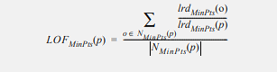

DBSCAN
Il DBSCAN (Density-Based Spatial Clustering of Applications with Noise) è un algoritmo di clustering density based che si basa su tre concetti fondamentali: Core, Border e Noise.
Le osservazioni del dataset vengono classificate in queste tre categorie in base al numero di osservazioni che stanno dentro una sfera multidimensionale con centro nell’osservazione stessa.
I due parametri che definiscono il DBSCAN sono EPS e MinPts, che agiscono nella seguente maniera.
EPS misura il raggio da assegnare alla sfera, mentre MinPts stabilisce il numero minimo di punti che devono essere all’interno della
sfera per poter considerare l’osservazione in questione come Core. I punti di Core sono, come definito, le osservazioni che soddisfano questa
condizione, mentre si definiscono punti di Border le osservazioni che sono all’interno della sfera multidimensionale di almeno un punto di Core, ma non soddisfano la condizione per essere considerati Core.
I punti di Noise sono semplicemente le osservazioni restanti, ovvero quelle che non entrano mai nel raggio di un punto di Core.
Questo metodo garantisce che i punti di Core siano sempre nello
stesso cluster finale, mentre non è robusto per quanto riguarda le osservazioni Border.
I vantaggi di questo metodo sono evidenti: data la sua semplicità è poco oneroso computazionalmente e può quindi essere applicato anche su dataset enormi nei quali metodi concorrenti
più complessi risultano troppo pesanti. Risulta anche robusto rispetto a problemi riscontrabili in cluster analysis tradizionali.
Presenta anche delle criticità non trascurabili: la sua semplicità lo rende eccessivamente rigido e in grado di identificare solamente cluster della medesima
densità ed è inoltre fortemente dipendente dalla scelta dei parametri Eps e MinPts.
Si è dimostrato altresì sostanzialmente inutile su dati con un numero rilevante di variabile qualitative in classi.
DBSCAN ha ottenuto risultati operativi ottimali con dataset di dimensioni ridotti, mentre è risultato poco efficace su dataset con numero di attributi particolarmente alto.
Nella nostra analisi abbiamo deciso di porre il numero MinPts pari al valor medio tra il logaritmo del numero di osservazioni, numero di attributi più 1 e 2 volte il numero di attributi.
Con tale media ci si è assicurati che MinPts sia maggiore del numero di colonne, condizione posta dai creatori del package R DBSCAN. Grazie all’inserimento del logaritmo del numero di osservazioni
nella formula si riesce a dare un peso alla dimensione osservazionale del dataset. Per trovare il valore di EPS, secondo parametro del metodo, abbiamo ordinato in senso crescente tutte le distanze
risultanti da un KNN con numero di neighborood pari a MinPts trovato al passo precedente. Abbiamo utilizzato le funzioni di split per avere delle proposte di taglio. Una volta presa la decisione su Eps il
DBSCAN identifica le osservazioni Outlier classificandoli come punti di Noise.
LOF
Il LOF (Local Outlier Factor) è un metodo density-based che assegna ad ogni osservazione nel dataset la propensione di quel valore ad essere outlier.
Il metodo funziona costruendo dei cluster a densità simile, considerando un numero di nearest-neighbour fissato (MinPts).
Le osservazioni nello stesso cluster avranno valore 1. Il MinPts permette di determinare una densità soglia per l’algoritmo di cluster.
La densità dei cluster è però dinamica, infatti cluster diversi possono avere densità differenti. Questa proprietà supera le criticità del DBSCAN nel riconoscimento di cluster tutti a medesima densità.
Il LOF di un oggetto p è: 
Dove lrd (local reachability density) è l'inverso della distanza di raggiungibilità media basata sui vicini MinPts (vedi formula in OPTICS).
E’ interessante come questo metodo sia in grado di gestire bene dati con molti attributi ed in particolar modo se presenti molte variabili qualitative in classi.
Nella nostra analisi abbiamo deciso di porre il numero MinPts (corrispondente al k del metodo kNN) pari al valor medio tra il logaritmo del numero di osservazioni,
numero di attributi più 1 e 2 volte il numero di attributi. Dopo aver calcolato gli score del LOF li abbiamo ordinati in ordine crescente e abbiamo utilizzato le
funzioni di split per avere delle proposte di taglio. Una volta presa la decisione sulla soglia, tutte le osservazioni con un outlier factor superiore alla soglia sono state considerate outlier.
Come ci si aspettava dalla teoria, questa metodologia non è stata efficiente per dataset ad alta dimensionalità in quanto produce vettori molto grandi in termini di memoria che non sono allocabili e
utilizzabili nell'analisi. Risulta, quindi, fallimentare l'utilizzo del LOF nei dataset come "Shuttle", "Http", "ForestCover" e "Smtp".
kNN
L’algoritmo di outlier detection basato sul metodo k-Nearest Neighbour è un algoritmo distance based estremamente semplice: una volta settato il numero k di nearest neighbour,
si va a calcolare la distanza tra ogni osservazione e i suoi k vicini. Dopo aver ottenuto le k misure di distanze si va a calcolarne una media, questa distanza media rappresenta proprio
l’outlier score di ogni osservazione.
Questo modo di procedere si basa sul concetto banale che osservazioni più lontane sono più diverse tra loro, quindi osservazioni outlier, diverse da tutte le osservazioni normali del dataset,
risulteranno perciò avere una distanza maggiore.
Sebbene concettualmente molto semplice, abbiamo riscontrato diverse difficoltà. In primo luogo il tuning del parametro k. Mentre in caso di classificazione o regressione è sufficiente
implementare una cross-validation per trovare il numero di vicini ottimale, per riuscire ad ottenere previsioni accurate, nel caso dell’outlier detection questo non è possibile,
in particolare, per come abbiamo deciso di strutturare l’analisi con metodi unsupervised, non abbiamo a nostra disposizione una variabile risposta.
Abbiamo pensato di selezionare casualmente delle variabili del nostro dataset utilizzandole come variabili risposta per fittare una regressione e calcolare il k ottimale, tuttavia abbiamo
scartato questo metodo, non solo per pesantezza computazionale ma anche perché lo scopo della nostra analisi è diverso da quello di una previsione accurata rispetto ai vicini.
Cercando in letteratura non sono emerse molte indicazioni su come settare questo parametro in modo ottimale, quindi, appoggiandoci anche alla teoria trovata per il DBSCAN, abbiamo deciso di
provare delle misure di sintesi basate sul numero di righe e sul numero di attributi: abbiamo implementato tre kNN diversi con k= min(log(n), p+1), k=max(log(n), p+1) e k=mean(log(n), p+1),
in un caso non è stato possibile computare il massimo in quanto eccedeva il numero di variabili, abbiamo allora scelto di utilizzare (n-1).
Dai dati analizzati, purtroppo non sembra esserci un trend o una motivazione guidante la scelta di k. Questa andrebbe approfondita andando a caratterizzare più a fondo la struttura dei dati,
lo consigliamo per un futuro lavoro.
Per cercare di risolvere questo problema abbiamo provato ad utilizzare un algoritmo di kNN aggregato, che va a calcolare le distanze, fornendone poi una media, che vanno da un k minimo, settato
come min(log(n), p+1), e un k massimo, settato come max(log(n), p+1).
Questa tecnica non si discosta particolarmente dall’altra in termini di AUC e circa nel 17% dei casi siamo riusciti ad ottenere
performance migliori con l'aggregazione.
Il secondo problema che siamo stati chiamati ad affrontare è dovuto alla complessità computazionale dovuto al calcolo delle distanze, questo è stato agevolmente risolto attraverso l’utilizzo di un
algoritmo kNN-kdTree, questa tecnica utilizza un kd-Tree per suddividere lo spazio delle osservazioni andando a ristrutturare l’intero dataset in un albero. Per ogni osservazione che si intende
analizzare si scorre l’albero fino a trovare la regione di spazio dove è allocato questo punto e qui, viene calcolata la distanza con i vicini situati nella stessa regione. Riducendo la complessità
computazionale sia in termini di tempo che di memoria.
La funzione usata permette diversi tipi di ricerca, quello da noi utilizzato è sempre stato il searchtype standard. Inoltre è possibile, se lo si desidera andare a calcolare Approximate kNN,
tecnica non utilizzata da noi che potrebbe però risultare vincenti in dataset ad elevate dimensioni.
Per quanto riguarda l'assegnazione della classe (outlier o no) alle osservazioni si sono utilizzate le funzioni di split, come per i metodi sopra descritti.
Una considerazione finale che possiamo fare è che le performance del kNN, sono risultate migliori in dataset non scalati rispetto a dataset scalati, ciò invece si inverte di tendenza quando
nel dataset andiamo ad aggiungere variabili dicotomiche, quello che si è potuto osservare nei quattro casi di dataset a cui è stata aggiunta una versione completa, è stato un miglioramento
dei risultati nel caso normalizzato (che rimane comunque inferiore di quelli ottenuti prima dell'aggiunta di varibili binarie).
Questo probabilmente dovuto al fatto che scalando i suddetti vengano compressi andando a mascherare le distanze elevate.
Nel complesso possiamo affermare di avere ottenuto risultati buoni con questo metodo.